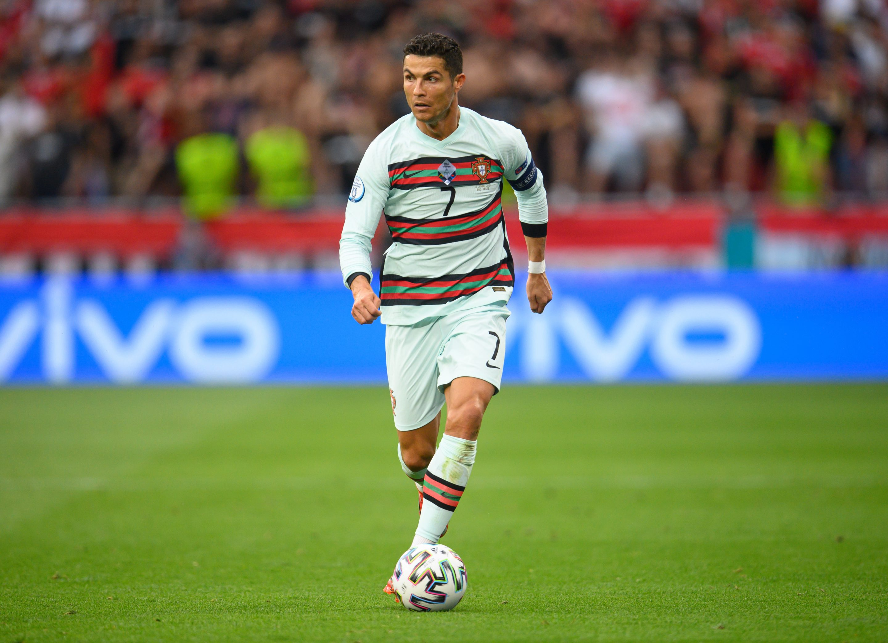

 <link rel ="stylesheet" type="text/css" href="tribute.css" > 
 <html>
    <main id="main">
        <h1 id="title" class ="red-text">Cristiano Ronaldo</h1>
        <p>The greatest goalscorer football has ever seen.</p>
    <figure id="img-div">
        <!-- Photo Grid -->
        <!-- Empty column -->
        <div class = "row" >
            <!-- Empty column -->
            <div class = "column"></div>
             <div class ="column">
        
        
            </div>  
        <div class = "column">
            
            
            </div>
            
        </div>
    
    <figcaption id="img-caption">

    Cristiano Ronaldo award winning and in the field.
    
        </figcaption>
    </figure>

    <div id="tribute-info">
        <h3>Cristino Ronaldo has had one of the most amazing careers football has ever seen. Here are some of this career highlights: </h3>
        <ul>
            <li> <strong>Ronaldo's first trophy -</strong> - At 18, he impressed everyone in a match between Man United and Sporting and was then was offered a spot in the Man United</li> 
            <li> <strong>He joins Real Madrid -</strong>  Ronaldo's success at Manchester United opened many opportunities for him. He was then able to join the highly regarded football club Real Madrid for £80 million. </li>
            <li><strong> His Performances in the KO stages of the 2016-2017 Champions League -</strong> Real Madrid had successfully defended its title during the 2017 Champions League, all thanks to Ronaldo.</li>
            <li><strong>When he won his fifth Ballon d'Or - </strong> Ronaldo already won five of these awards: one in 2008, 2013, 2014, 2016, and 2017. </li>
            <li><strong>When he became Real Madrid's top goalscorer - </strong> Ronaldo had taken over Spanish player Raúl who scored 323 goals in 741 games over 16 years at Real Madrid.</li>
        </ul>
        <figure>
            <blockquote cite="https://kidadl.com/quotes/best-cristiano-ronaldo-quotes-about-life-success-and-football">
                <p>Dreams are not what you see in your dreams. Dreams are things which do not let you sleep.</p>
            <figcaption>--Cristiano Ronaldo</figcaption>
        </blockquote>
        </figure>
         <h4>You can find more about Ronaldo's life and achivements <a id ="tribute-link" href="https://en.wikipedia.org/wiki/List_of_career_achievements_by_Cristiano_Ronaldo" target="_blank"> here.</a></h4>
    </div>
        </main>
    </html>
